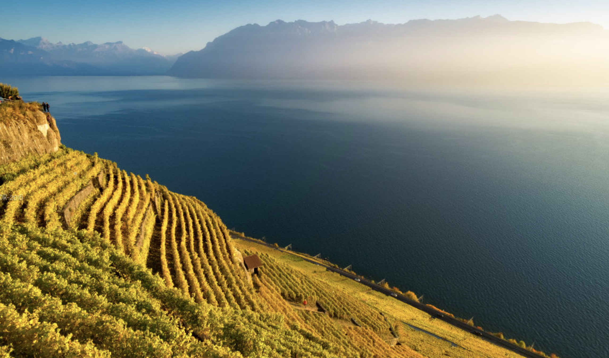

Le vent se lève !… Il faut tenter de vivre !

Pierre Guilbert
Computer Vision, Machine Learning & Mathematical Modelling
I am a French computer vision engineer based in Lausanne, Switzerland, with 10 years of experience in computer vision, machine learning and mathematical modelling. I currently work at Genius Sports to enhance how we observe and understand sports.
My interests lie in probability theory, geometry and nonlinear optimization, especially in turning mathematical ideas into practical solutions. I enjoy working with others on challenging problems where theory and practice intersect.